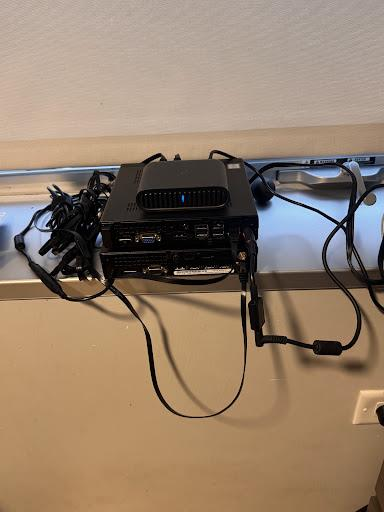
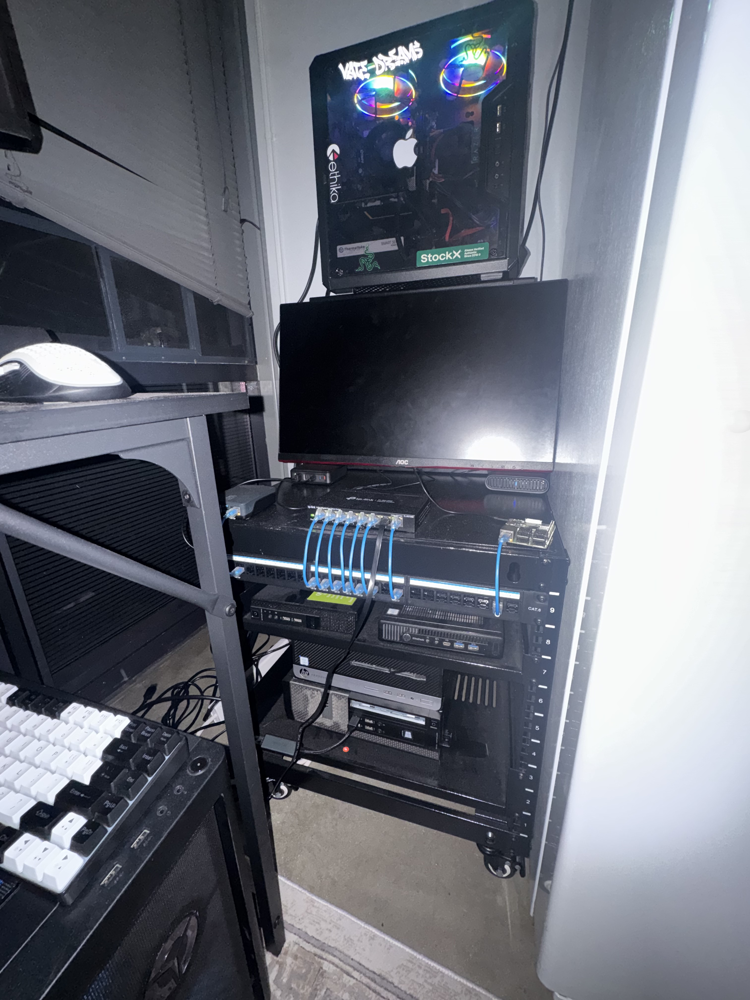
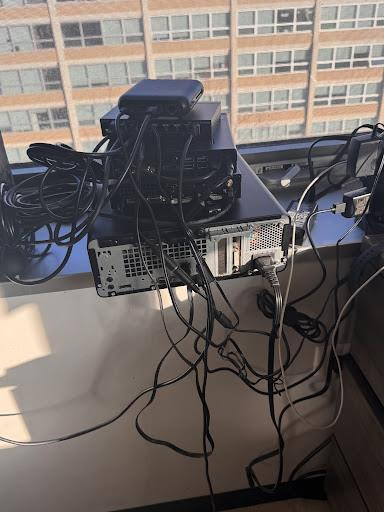
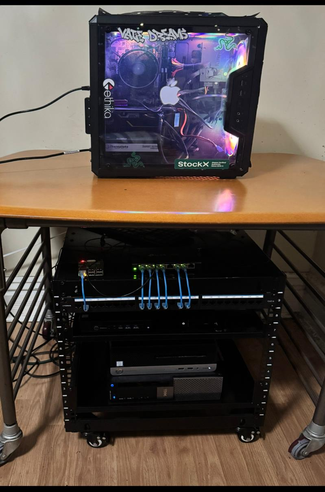

NETWORKING / CYBERSECURITY / SELF-HOSTING
My homelab
journey.
It started with a few virtual machines and a question: how does all of this actually work?
A look at the systems I built, the problems I ran into, and the lessons that shaped my lab.
Explore the progression

Same curiosity.
A lot more cable.
01 / THE STARTING POINT
A whole lab.
One desktop.
Coursework introduced me to virtualization. VirtualBox gave me a place to put it into practice.
I ran virtual machines on my personal desktop to explore networking, Windows administration, and cybersecurity testing in my own lab.
I could build and experiment with an entire environment before buying dedicated hardware. Sharing resources with my daily desktop soon became a constraint.
INSIDE VIRTUALBOX
An environment to learn by doing.
02 / MY OWN NETWORK
Networking outside
the textbook.
A private network in my dorm made addressing and routing something I could work with directly.
I used a TP-Link router for my internal network and set up wired connections for my PC and PS5. I started experimenting with static IP addresses and routing within that network.
A working connection is the beginning. Understanding how devices find one another and how traffic leaves the network takes hands-on practice.
THE DORM SETUP
My room.
My internal
network.
- Hardware
- TP-Link router
- Connections
- PC and PS5 over wired LAN
- Exploration
- Private addressing and routing
03 / DEDICATED HARDWARE
The lab gets
its own home.
Running everything on my daily computer meant competing for the same resources.
I added a Dell OptiPlex and an HP EliteDesk to give the lab dedicated hardware. That let me keep experimenting without tying every lab session to my personal desktop.
Repurposed computers can do useful infrastructure work. Dedicated machines also bring new responsibilities for networking and maintenance.
04 / CLUSTER & SEGMENTATION
Separate machines.
A connected lab.
The setup expanded into a three-node Proxmox cluster.
I repurposed a Dell OptiPlex 980 as a physical OPNsense firewall and added a TP-Link managed switch. A dedicated management VLAN used 802.1Q tagging to separate management traffic from lab traffic.
Clustering introduced quorum. Segmentation made me think deliberately about which systems should communicate and how I manage them.

05 / ORGANIZING THE INFRASTRUCTURE
A rack.
A little more order.
As the lab grew, the physical layout became part of the project.
I organized the machines in a rack and routed cabling through a patch panel. A Raspberry Pi 3B on its own VLAN ran AdGuard for DNS filtering and Unbound for recursive DNS resolution.
Running services means understanding their dependencies. DNS and physical cabling deserve as much attention as the virtual machines.
06 / LOCAL AI
A place for
my second brain.
The lab became a place to experiment with AI on my own hardware.
I run local models on a Lenovo Legion T5. I also built a retrieval-augmented generation (RAG) pipeline to search my notes, ideas, and project material and bring relevant information into model responses.
The model is one part of the system. Organizing the source material and retrieving useful context are part of making it useful.

07 / BEYOND THE RACK
More services.
More responsibility.
The lab now supports storage, media, backups, and infrastructure at another location.
An HP desktop serves as my backup server. I also use a server at another location to route TAK traffic and participate in my backup setup.
Keeping useful data and supporting remote services makes recovery planning and documentation part of the work.
WHAT THE LAB SUPPORTS
Self-hosted services
Local cloud storage and a media server.
Local backups
An HP desktop with a dedicated backup role.
Another location
Remote infrastructure for TAK traffic and backups.
The next part of the journey:
documenting what I build.